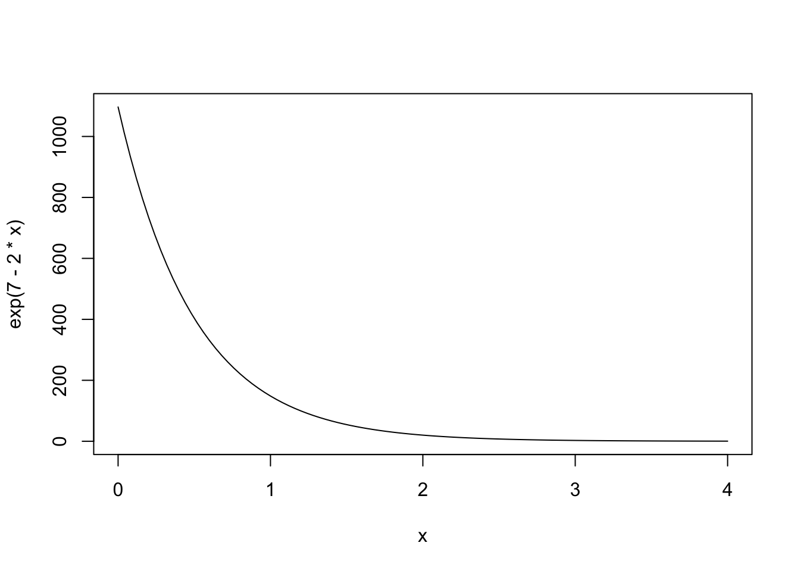

library(ggplot2)
library(tidyverse)
library(tidybayes)
library(cmdstanr)Sometimes things slow down
There are no straight lines in ecology
A lot of relationships in ecology are curved lines, often because there’s a constraint on the thing we are modelling as a response variable. For example, animals might get used to a specific stimulus over repeat exposures, with the result that eventually the response time drops to 0. However, response time can never be less than 0, and so the relationship is constrained from below. Relationships can be bounded above as well. Consider how the mass of an individual organism scales with increasing resources: more food means a bigger body, but eventually that relationship will flatten out.
In ecology, its very common to model these nonlinear relationships by applying a transformation to the response variable and modelling the resulting relationship with a gaussian linear regression. Sometimes this works out fine. Increasingly, ecologists are trying to go beyond this with models that reflect the data-generating process more explicitly. For example, an ecologist might model growth with one of the many growth equations. However, even if we develop a nonlinear model with a non-gaussian likelihood and all the features, our colleagues will still want a comparison to the now-traditional transformed lines.
I wanted to write some simple Stan models to fit these transformed-response models. I was curious about the specific shape of the relationship we are fitting when we use these models. I have a suspicion that these curves are often fit to data, not because the scientist wants to make this curving shape, but because it improves residual plots. Whatever the reason for their use, I find that making pictures of something really helps me to understand it. My colleagues use these models, so this post is a beginning exploration of them.
Two pictures of two curves
I love the base R function curve(); it might be my favourite base function! Let’s look at the curve that results from these two kinds of transformations.
When I say “results from”, I mean what happens if you reverse the transformation on the response variable. In the case of a log-transformation model:
\[ \begin{align} \text{log}(y) &= a + bx \\ y &= e^{a + bx} \end{align} \]
And in the case of a square root model:
\[ \begin{align} \sqrt{y} &= a + bx \\ y &= (a + bx)^2 \end{align} \]
In both cases, the effect is like having a link function on the response variable. To get the curve, you just reverse the transformation on both.
curve(exp(7 - 2*x), xlim = c(0, 4))
curve((7-2*x)^2, xlim = c(0, 8))
Note
I find this a confusing way to think of the square root curve; I prefer:
steep <- 2
minmax <- 4
elev <- 1
curve(steep * (x - minmax)^2 + elev, xlim = c(0, 8))This is far easier to set priors on – useful to remember for those (rare?) times when this is a relationship you actually want to work with.
Writing the models in Stan
Let’s write out the model we’re fitting, using g() to refer to either the log or the square root:
\[ \begin{align} g(y) &\sim \text{Normal}(\mu, \sigma) \\ \mu &= a + bx \\ a &\sim \text{Normal}(...) \\ b &\sim \text{Normal}(...) \\ \sigma &\sim \text{Exponential}(...) \\ \end{align} \]
You can see from here that we’re putting the likelihood ( the top line, \(\text{Normal}(\mu, \sigma)\) ) through the transformation function also. This means that the “errors” or variation around the curve also get transformed. In the case of the log transformation, we are putting that normal distribution through the exponential function – in other words, we’re using a Lognormal distribution. With the square root transformation, it seems like perhaps we’re modelling something like a generalized chi square.
Square root transformation
I want to begin with a simple prior predictive simulation from the square-root model.
sqrt_prior <- cmdstan_model(
here::here("posts/2023-08-22-transformed-regression/sqrt_prior.stan")
)
sqrt_priordata{
int n;
vector[n] x;
}
parameters{
real slope;
real intercept;
real<lower=0> sigma;
}
model {
slope ~ std_normal();
intercept ~ std_normal();
sigma ~ exponential(1);
}
generated quantities {
vector[n] yrep;
for (i in 1:n){
yrep[i] = square(normal_rng(slope * x[i] + intercept, sigma));
}
}xseq <- seq(from = 0,
to = 20,
length.out = 15)
sqrt_prior_reps <- sqrt_prior$sample(
data = list(x = xseq,
n = 15),
refresh=0)Running MCMC with 4 sequential chains...
Chain 1 finished in 0.1 seconds.
Chain 2 finished in 0.1 seconds.
Chain 3 finished in 0.1 seconds.
Chain 4 finished in 0.0 seconds.
All 4 chains finished successfully.
Mean chain execution time: 0.1 seconds.
Total execution time: 0.8 seconds.sqrt_prior_plot <- sqrt_prior_reps$draws() |>
tidybayes::gather_draws(yrep[i], ndraws = 12) |>
mutate(x = xseq[i])
sqrt_prior_plot |>
ggplot(aes(x= x, y = .value)) + geom_point() +
facet_wrap(~.draw)To me, this illustrates the difficulty of setting useful priors on a square-root transformed model.
Log transformation
let’s try with log-transformed curves.
log_trans <- cmdstan_model(
here::here("posts/2023-08-22-transformed-regression/log_trans.stan"))
log_transdata{
int n;
vector[n] x;
vector[n] y;
}
transformed data{
vector[n] ylog = log(y);
}
parameters{
real slope;
real intercept;
real sigma;
}
model{
ylog ~ normal(intercept + slope*x, sigma);
}
generated quantities{
vector[n] ybar = exp(intercept + slope*x);
vector[n] yrep;
for(i in 1:n){
yrep[i] = exp(normal_rng(intercept + slope*x[i], sigma));
}
}# make a bit of fake data
xx <- 0:14
yb <- 5.7 - 0.8*xx
yy <- exp(rnorm(length(xx), mean = yb, sd = 1))
plot(xx,yy)
log_trans_post <- log_trans$sample(
data = list(n = length(xx), x = xx, y = yy),
refresh = 0)Running MCMC with 4 sequential chains...
Chain 1 finished in 0.1 seconds.
Chain 2 finished in 0.1 seconds.
Chain 3 finished in 0.1 seconds.
Chain 4 finished in 0.1 seconds.
All 4 chains finished successfully.
Mean chain execution time: 0.1 seconds.
Total execution time: 0.6 seconds.log_trans_post$draws() |> tidybayes::gather_rvars(ybar[i]) |>
mutate(xx = xx[i]) |>
ggplot(aes(x = xx, ydist = .value)) + stat_lineribbon()log_trans_post$draws() |> tidybayes::gather_rvars(yrep[i]) |>
mutate(xx = xx[i]) |>
ggplot(aes(x = xx, ydist = .value)) + stat_lineribbon()Square root transformed model
Going back to a square root model, fitting it to the same data that I just used for the log-transformed model. I’m doing it this way because the toy dataset I made and used above is much easier to reason about. I also want to see how a square-root model fits data that comes from a different data-generating process.
sqrt_trans <- cmdstan_model(here::here("posts/2023-08-22-transformed-regression/sqrt_trans.stan"))
sqrt_transdata{
int n;
vector[n] x;
vector[n] y;
}
transformed data{
vector[n] ytrans = sqrt(y);
}
parameters{
real slope;
real intercept;
real sigma;
}
model{
ytrans ~ normal(intercept + slope*x, sigma);
}
generated quantities{
vector[n] ybar = square(intercept + slope*x);
vector[n] yrep;
for(i in 1:n){
yrep[i] = square(normal_rng(intercept + slope*x[i], sigma));
}
}sqrt_trans_post <- sqrt_trans$sample(
data = list(n = length(xx), x = xx, y = yy),
refresh=0)Running MCMC with 4 sequential chains...
Chain 1 finished in 0.1 seconds.
Chain 2 finished in 0.1 seconds.
Chain 3 finished in 0.1 seconds.
Chain 4 finished in 0.3 seconds.
All 4 chains finished successfully.
Mean chain execution time: 0.2 seconds.
Total execution time: 0.9 seconds.sqrt_trans_post$draws() |> tidybayes::gather_rvars(ybar[i]) |>
mutate(xx = xx[i]) |>
ggplot(aes(x = xx, ydist = .value)) + stat_lineribbon()sqrt_trans_post$summary() |>
slice(2:4)# A tibble: 3 × 10
variable mean median sd mad q5 q95 rhat ess_bulk ess_tail
<chr> <num> <num> <num> <num> <num> <num> <num> <num> <num>
1 slope -0.924 -0.923 0.235 0.228 -1.31 -0.547 1.00 1617. 1727.
2 intercept 10.1 10.1 1.93 1.85 6.98 13.3 1.00 1629. 1426.
3 sigma 3.82 3.71 0.827 0.763 2.69 5.39 1.00 1409. 1677.Unintuitive as these parameters are, you at least can get your downwards and decelerating curve from this model!